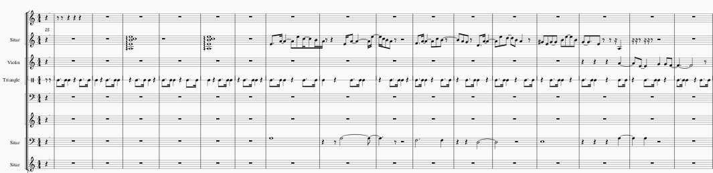

| Week 1 | Week 2 | Week 3 | Week 4 | Week 5 | Week 7 | Week 8 | Week 9 | Week 10 |
The piece of music I transcribed is called, 'Chura Liya Hai.' It is from the 1973 Bollywood film "Yaadon Ki Barat". I picked this because it is beautifully sung by Asha Bhosle, the Indian playback singer. I utilised a YouTube video that is displayed below to transbribe an instrumental version of the piece. I found this useful as it displayed both the audio recording and printed score
Below is my transcribed MuseScore file. It can also download it here. Please note, the score should be viewed in, 'continuous view' on MuseScore. The music sheet holds a lot of empty bars that I was unable to delete once I finished transcribing my 10+ bars. I have screenshotted my score, cropping out the empty bars.
